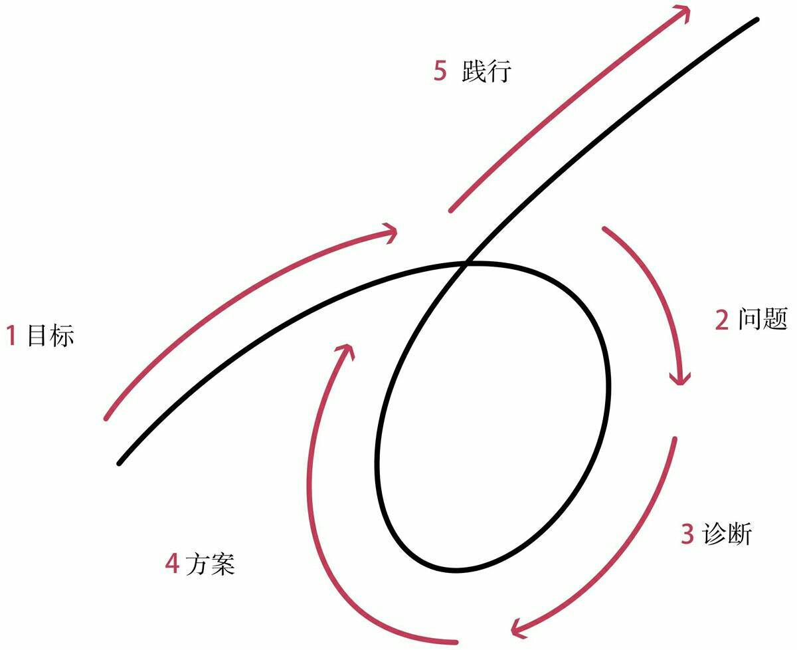
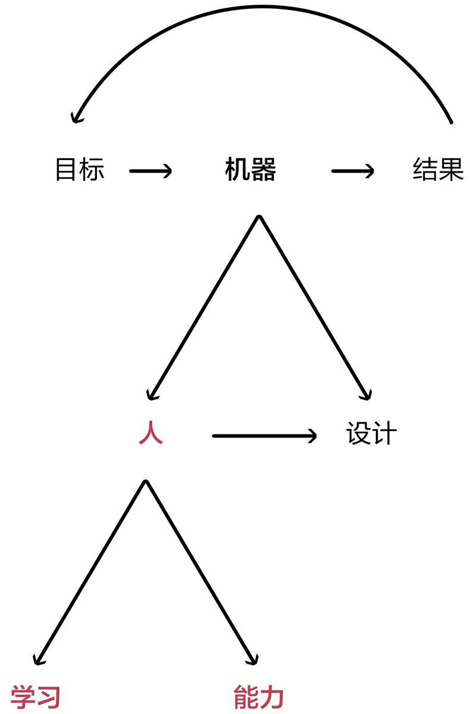

世俗的成功法则
人人都有长处和短处，人人都能在生活中扮演重要角色。大自然塑造万事万物皆有目的。你最需要的勇气不是驱使你战胜别人的勇气，而是不管其他人对你有何冀望，你始终坚持做最真实的自我的勇气。
——《原则》
读过的书中超预期的不多，《原则》算是其中一本。
想了一下，把题目定为《世俗的成功法则》，算是对过往所理解的成功学的小总结。
所谓成功，无非解决以下问题，亦即第一条原则。
独立思考并决定：（1）你想要什么；（2）事实是什么；（3）面对事实，你如何实现自己的愿望
你想要什么
许多人根本不知道自己想要什么。
我也不知道。
刚毕业的时候，有人问我目标。
我说，有一份稳定的工作，有老婆孩子，有周末可以逛的公园。
如今，一切近在咫尺。
是不是感觉已经到达了人生的巅峰？
然而并没有。
程序员，销售，主管，架构师，合伙人……
工作的部分，算是很努力地尝试了。
然而，只是一份工作。
儿子，父亲，丈夫，兄弟，朋友……
生活的部分，仍需努力。
目标必须是自己的
我们这一代人（中许多人）的悲哀在于——
没得选，
或约等于没得选。
这是一个剧变的时代，
我们的父母，却极少能给予有效的建议。
比如高考时，打工时，遇到挫折时……
很多时候，我们也根本不清楚即将面临的是什么，甚至无法与自己好好相处。
于是，只能选择责任。
对父辈艰辛的理解和现实生活的压力，更增加了我们的迂腐和愚忠。
连电视剧里也说——
不要大声责骂年轻人，他们会立刻辞职的，但是你可以往死里骂那些中年人，尤其是有房有车有娃的那些人。
但责任并不是目标。
不要混淆目标和欲望。
当我们的责任完成时，我们还能做什么？想做什么？
工作是为了养家糊口，却不仅仅是养家糊口。
结婚是家族的大事，却又仅仅是自己的事。
年龄渐长，我们又注定会看到我们最亲爱的人，一个一个离去，却无能为力。
人世间最大的悲痛莫过于此。
然而当他们离去时，我还是我吗？
我是不是突然变得什么也不是？
到了不惑的年龄，却依旧不能不惑。
不管怎么说，目标必须是我们自己的。
我是什么，要由我们自己来定义。
妈妈说，不要委屈自己。
目标必须是理想化的
或者说，必须赋予我们的目标一些理想化的意义。
不要把成功的装饰误认为成功本身。
锐•达利欧的人生目标是，有意义的工作和人际关系。
一个检验目标的好方法是，想象你的目标突然实现了，接下来该怎么办？
比如，突然实现了一个小目标，赚到了一个亿，该怎么办？
假如你的答案是继续赚钱，那赚钱本身应该可以作为目标。
（但要注意，钱本身是没有价值的，钱的价值在于它当下可以买到的东西。）
假如你的答案是各种玩，那似乎玩才是你的真正目标。
（此时应该专注于玩而不是那么拼命赚钱了。）
当然，也要适当地排下优先级。
尽管你几乎可以得到你想要的任何东西，但你不可能得到你想要的所有东西。
事实是什么
这个问题的回答，决定了一个人成就的高度。
选择比努力更重要。
我们的所有决策，都是基于我们所看到的事实。
掌握足够多真正客观的事实，才能帮助我们做出最优抉择。
最重要的事情并不是预知未来，而是知道在每一个时间点上如何针对可获得的信息做出合理的回应。
真相是什么
最近关于原生家庭的话题很火。
为什么要摆脱原生家庭的影响？
因为家庭生活里长期形成的某些根深蒂固的偏执，最终会使我们看不清世界的本来面目。
比如我爸就经常喜欢指导我们要怎样怎样做生意，但是事实上，在他的人生经历中，鲜有成功的经商经验。
假如按他说的去做，迟早要掉沟里。
我至今犹记得十几年前去拜访一个亲戚长辈的场景。
那时我哥刚跟人合伙开了个小店，本来挺开心的进门，谁知劈头就飞来一句:
“听说你自己出去开厂了？如果是真的，那就是疯了！”
竟无言以对。
我们的父母长辈，多有严重的小农意识和小市民心态。
比如，崇尚自给自足，羞于向别人求助；
小富即安，缺乏自律，害怕改变，懒得多向前一步；
自私自利，贪小便宜，做事缺乏长远考虑；
嫉妒心和虚荣心重，透支未来也忍不住要攀比……
想一想，长期在这样的环境熏陶下的我们，要多艰难才能长成自己喜欢的样子。
所以，每当我们面对现实，要时刻保持头脑极度开放、极度透明。
多问问自己，真相到底是什么？
我们身上可能有哪些偏见会阻碍我们认清事实？
客观规律是什么
这个世界上唯一不变的东西，就是变化本身。
当我们遇到新问题，最好先假设我是无知的，我的观点可能是错的。
Keep foolish，keep hungry。
停止幻想——事情应该怎么样怎么样。
多问——我怎么知道我是对的？
普遍的规律是什么？
有哪些科学的分析方法和系统框架？
成功的人和案例在哪里？
符合客观规律的，才可能是对的。
确保总是用可信度加权的方法来进行决策。
怎么办
一个人不可能两次踏进同一条河流，但是每一条河流都是相似的。
锐•达利欧提出五步流程的方法，来帮助我们实现螺旋向上的人生。
这其实并不是什么新理论。
它类似于质量管理的PDCA，即计划（Plan），执行（Do），检查（Check），处理（Action）。
也类似于软件工程里的迭代，一次次循环开发出更满意的产品。
五步流程
1．有明确的目标。
2．找到阻碍你实现这些目标的问题，并且不容忍问题。
3．准确诊断问题，找到问题的根源。
4．规划可以解决问题的方案。
5．做一切必要的事来践行这些方案，实现成果。

如何提高效率
五步流程简单易行，只需像机器一样执行。
把决策和执行的过程都变成可以清晰描述的算法，把所有事情系统化流程化和自动化。
简单来说，就是要按原则做事。 
按原则做事
就像时间管理技术教给我们的，在固定的时间做特定的事情。
按原则做事，相当于提前想好，遇到什么情况做出何种反应。
生活中大多数的事情都是重复发生的，也就意味着，我们只需要很少的时间处理大多数事情，而可以把大多数时间花在比较难（有趣）的地方。
现在人们已经把许许多多重复的事情都交给了机器人。
不过身边为一件小事反复纠结的人还真不少。
明明几分钟就可以决定的事情，却犹犹豫豫，迁延时日，甚至夜不能寐。
应该仔细分析问题出在哪里。
如果缺少资料，就要大力搜集事实信息。
过于复杂则可以进一步分解，分别分析，再加权汇总。
每一个人的原则各不相同，需要一点一滴积累，持续改进。
不容忍问题
不容忍问题，才能真正地坚持原则。
痛苦是一个人潜在的成长机会。
你将有机会获取新的经验，放入你的原则工具箱。
你处理问题的原则将越来越丰富（强大）。
就像舞台上的主持人，已经为最尴尬的情形做好彩排，就不会再有什么意外发生。
理解和应对不好的东西才是更重要的，好的东西会自己照顾自己。
总是为最糟的情况做好准备，便能常常超越预期，越来越好。
自然的一项根本法则是，为了赢得力量，人必须努力突破极限，而这是痛苦的。
当真相与愿望不符时，大多数人抗拒真相，逃避痛苦。
但是，没有痛苦就没有收获。
我们的潜意识倾向于把一切不了解不愉快的东西都视为威胁。
你应该遵从理智——更高级的你，直面问题，不逃避问题。
甚至，培养＂从犯错中学习的愉悦感＂。
如果你能养成一种习惯，面对精神痛苦时能够自动地反思痛苦而不是躲避痛苦，你将能够快速地学习和进化。直面你的问题、错误和弱点导致的痛苦现实，会大幅提高你的效率。
与人合作
成功有两条路：（1）自己拥有成功所需的要素；（2）从其他人那里得到成功所需的要素。
当我们在一个陌生的地方迷路了，我们知道最好的选择的是向其他人求助。
但是在生活中遇到的很多问题，我们都更倾向于自己解决。
比如，我们会担心别人觉得自己无知，也可能刚刚在他人面前夸下海口……
总是因为这样那样的原因羞于启齿。
因为担心自我形象，让别人的看法，成为自己的障碍，事后来看，都是很愚蠢的。
屈服于潜意识的情绪，就相当于放弃了选择，把一切都交给更低级的自己。
当你可能有情绪的时候，先不要做判断，不要只考虑直接结果，要考虑后续与再后续的结果。
特别是，当有多个可信的人都说你错了，那就要认真考虑自己是不是真的错了。
比起目标的达成，我们是不是总是正确的，是不是总是由我自己来完成的，并没有那么重要。
每个人都有弱点，都有自我意识障碍和思维盲点。
大多数人犯下的最大错误是不客观看待自己以及其他人，这导致他们一次次地栽在自己或其他人的弱点上。
我们也没有足够的精力了解所有的事实。
与你知道的东西相比，能不能妥善处理“不知道”才是更重要的。
认识人与人的不同，才能真正从他人角度看问题。
与目标一致的人合作，才可能找到事实上最好的解决方案，而不是你自己可以想出来的最好方案。
愿我们都有勇气做出最好的抉择，成为最真实的自己。